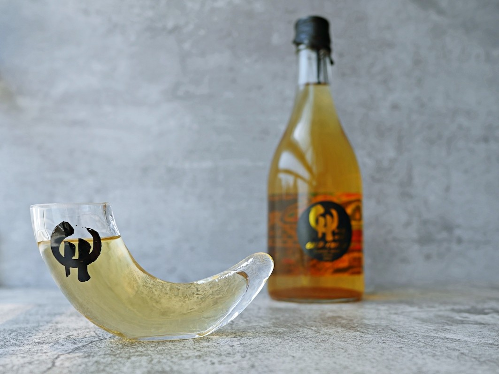

Traditional Honey Mead

Description
Nordic honey mead, also known as Viking mead, is an alcoholic beverage made from fermented honey and water. It has been enjoyed in the Nordic region for centuries,
dating back to the Viking Age. The traditional recipe typically includes a combination of honey, water, and yeast, which is left to ferment for several weeks.
Some variations may include additional ingredients such as fruits, spices, or herbs to add flavor and complexity to the final product. The result is a sweet,
slightly carbonated beverage with a honey-like taste and aroma. Nordic honey mead can be enjoyed on its own or used as a base for cocktails. It has gained popularity in recent years,
and many craft meaderies in the Nordic countries and beyond produce unique and innovative variations of this ancient beverage.
Ingredients
- 1.4 kilograms of honey
- 3.8 liters of water
- 1 packet of wine yeast
- 1-2 cinnamon sticks (optional)
- 1-2 cloves (optional)
- 1-2 slices of ginger (optional)
- Any aeromatic of your choice to give other flavors (optional)
Steps
Note that these are general guidelines, and the process may vary slightly depending on the specific recipe and ingredients used.
It's also important to sanitize all equipment and containers thoroughly to prevent contamination and spoilage.
- In a large pot or kettle, heat the water to a boil.
- Remove from heat and add the honey, stirring until it is completely dissolved.
- Add the optional spices (cinnamon, cloves, ginger) and let the mixture cool to room temperature.
- Once the mixture has cooled, transfer it to a sanitized fermentation vessel (such as a glass carboy or food-grade plastic bucket).
- Sprinkle the packet of wine yeast over the mixture and stir gently.
- Cover the vessel with a fermentation lock or airlock and let it sit in a cool, dark place for 2-3 weeks, or until the fermentation has stopped and the mead has cleared.
- Once the fermentation is complete, transfer the mead to a clean container and let it age for at least 2-3 months before drinking.
- Optionally, you can add additional flavors or spices during the aging process, or carbonate the mead by adding a small amount of sugar before bottling.
Skol!